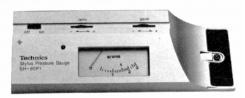
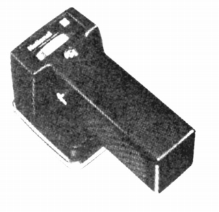
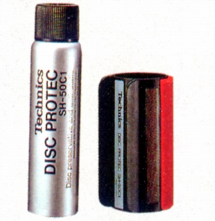
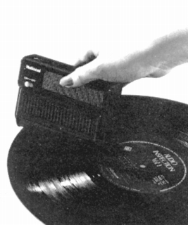
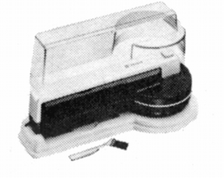
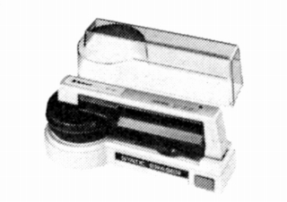
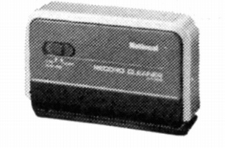

その他の製品
�@針圧計
SH-50PI

■価格 6,000円
■備考 電子コントロールによる針圧直読式
測定範囲 0.5〜3g
電源 DC3V（酸化銀電池×2）
�Aレコード帯電除去器
BH-653

■価格 6,300円
■備考 静電気の有無のチェッカー付き
乾電池式（単3電池4本）
電池寿命 100分（LP約600回処理分）
この製品は「ナショナル」ブランド
�Bディスク処理キッド
SH-50C1

■価格 2,800円
■備考 ディスク処理材+クリーナー
�Cクリーナー
BH-651

■価格 2,800円
■備考 乾電池式クリーナー。
この製品は「ナショナル」ブランド
BH-661

■価格 4,500円
■備考 乾電池式回転ブラシ自走型クリーナー。
電源 単3電池2本
電池寿命 LP約50面
この製品は「ナショナル」ブランド
BH-662

■価格 8,900円
■備考 乾電池式除電機能付き回転ブラシ自走型クリーナー。
電源 単3電池4本
電池寿命 LP約120面
この製品は「ナショナル」ブランド
BH-664

■価格 3,200円
■備考 乾電池式回転ブラシ型クリーナー。
電源 単3電池2本
電池寿命 約30分
この製品は「ナショナル」ブランド